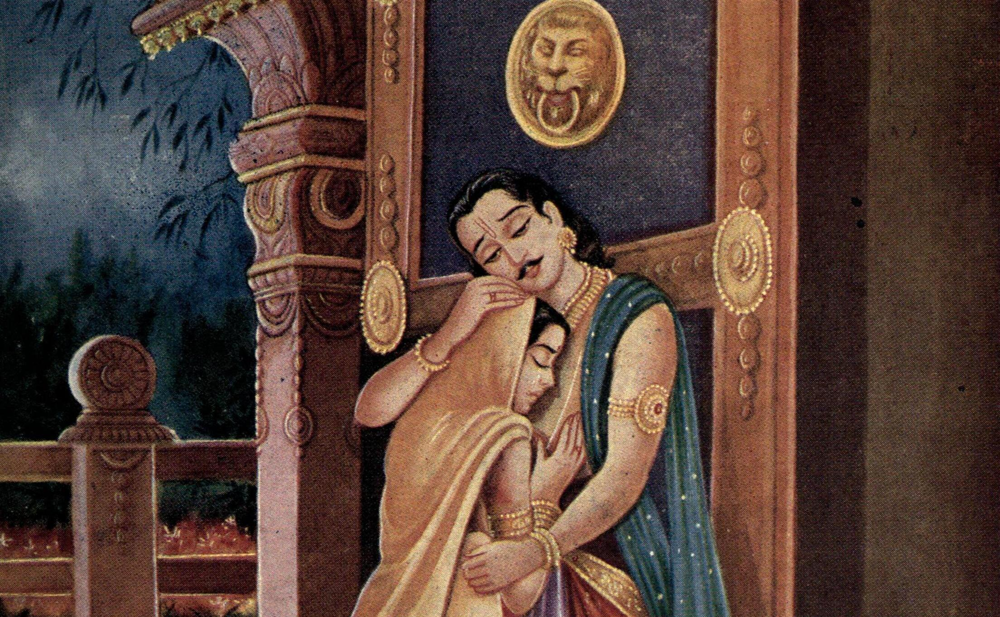

<!DOCTYPE html>
<html lang="en">

<head>
    <meta charset="UTF-8">
    <meta name="viewport" content="width=device-width, initial-scale=1.0">
    <title>Ulupi</title>
    <link rel="icon" href="https://img.icons8.com/external-sbts2018-outline-color-sbts2018/58/000000/external-om-diwali-sbts2018-outline-color-sbts2018.png" type="image/x-icon">
    <link rel="stylesheet" href="assets/bootstrap/css/bootstrap.min.css" />
    <link rel="stylesheet" href="assets/css/main.css" />
    <noscript><link rel="stylesheet" href="assets/css/noscript.css" /></noscript>
    <script>
        function checkEvt() {
            var evTypep = window.performance.getEntriesByType("navigation")[0].type;
            if (evTypep == 'reload') {
                window.location.replace("./");
            }
        }
        checkEvt();
    </script>
</head>

<body class="is-preload">
    <div id="wrapper">
        <header id="header" class="alt">
            <a href="main.html" class="logo">Cultural Education</a>
            <nav>
                <a href="#menu"></a>
            </nav>
        </header>
        <nav id="menu">
            <ul class="links">
                <li><a href="main.html">Home</a></li>
                <li><a href="intro.html">Introduction</a></li>
                <li><a href="barbarika.html">Barbarika</a> </li>
                <li><a href="yuyutsu.html">Yuyutsu</a> </li>
                <li><a href="satyaki.html">Satyaki</a> </li>
                <li><a href="vikarna.html">Vikarna</a></li>
                <li><a href="ulupi.html">Ulupi</a></li>
            </ul>
        </nav>
        <section id="banner" class="major">
            <div class="inner">
                <header class="major">
                    <h1>Unnoticed Character Sketches from Mahabharata </h1>
                </header>
                <div class="content">
                    <p>Cultural Education Project - 2nd Semester AIE</p>
                </div>
            </div>
        </section>
        <div id="main">
            <section>
                <div class="inner">
                    <header class="major">
                        <h2>Ulupi</h2>
                    </header>
                    <p>  &emsp;&emsp; Ulupi, is one of the most unnoticed character epic Mahabharata. She was the daughter of Kauravya, who was the king of Nagas. Her father
                        ruled the underwater kingdom of vicious serpents in the Ganga river. She was a versatile personality and was also a well-trained warrior. She is one amongst the 4 wives of the mighty archer Arjuna. Ulupi is said to have clearly
                        met as well as married Arjuna when he was in exile with his brothers and panchali, and with whom she bore his son Iravan. She played a major part in the upbringing of Babruvahana, Arjuna's son with Chitrangada. She is also credited
                        with redeeming Arjuna from the curse of the Vasus by restoring his life after he was slain in a battle by Babruvahana. So, the back story for all these events goes as follows. Arjuna, the third Pandava sibling, is ousted from Indraprastha,
                        to go on a twelve-year journey as a repentance for disregarding the provisions of his union with Draupadi, the siblings' regular spouse. Joined by Brahmins, Arjuna goes toward the north eastern district of presentday India. At
                        some point, when Arjuna washes in the Ganga waterway to play out his customs, the momentum manoeuvres him into the stream. He later understands that it was Ulupi, the Naga princess, who got a handle on and maneuverer him into the
                        waterway. She held him with her hands and went under her will. They at last wound up in a submerge realm, the house of Kauravya. Arjuna went over a conciliatory fire there and acquainted his rituals with the fire. Agni was satisfied
                        with Arjuna's unhesitating contribution of oblations. Enchanted by her demonstration, Arjuna asks Ulupi around her experience. She uncovers her genealogy and concedes that she had become hopelessly enamored with him. Arjuna, be
                        that as it may, decreases her proposition refering to his chastity on his journey. Ulupi contends that his abstinence is restricted uniquely to Draupadi, Arjuna's main spouse. Fulfilled by her contention, he weds her and goes through
                        a day with her. A child realized Iravan was destined to them. Ulupi awards him a help that any creatures that address submerged will submit to him and that he will make up never crushed in battle submerged. The Vasus, Bhiṣhma's
                        siblings, reviled Arjuna after he murdered Bhishma through injustice in the Kurukshetra War. <br> &emsp;&emsp; At the point when Ulupi knew about the revile, she looked for the assistance of her dad, Kauravya. Her dad went to Ganga,
                        Bhishma’s maternal parent, and delegated her for an alleviation from the revile. After hearing him, Ganga said that Arjuna would approach slaughtered by his own child, Babruvahana—Arjuna's child through Chitrangada—and highlighted
                        back to life when Ulupi put a diamond called Nagamaṇi on his chest.  Following her dad's recommendation, Ulupi actuates Babruvahana
                        to battle Arjuna. At the point when Arjuna goes to Manipur with the pony alluded for the Asvamedha penance, the lord Babruvahana, as coordinated by Ulupi, moves Arjuna to a duel. In the wild fight that occurred between them, both
                        are ruined by different's bolts. At long last, Arjuna is mortally injured and is murdered by his child when he shoots an amazing bolt at him. Chitrangada races to the spot and misuses Ulupi for impelling Babruvahana to battle Arjuna.
                        Apologizing of his deed, Babruvahana is resolved to commit suicide, yet is quickly halted by Ulupi. She goes to her realm and brings the Nagamani. At the point when she puts the Nagamani on Arjuna's chest, his life is re-established,
                        in this manner assuaging him of the Vasus' revile. When rewarded his life, Arjuna gets glad to see Ulupi, Chitrangada, and Babruvahana. He takes every one of them to Hastinapur. Upon the beginning of the Kali Yuga, the Pandavas
                        alongside Draupadi resigned and left the seat to their solitary beneficiary Arjuna's grandson, Parikshit. Surrendering any their effects and ties,they depicted their last excursion of journey to the Himalayas, joined by a canine.
                        Ulupi returned to her realm in the Ganga stream. People can also find her reference in the Vishnu Purana and the Bhagavata Purana.
                    </p>
                </div>
            </section>
        </div>
    </div>
    <footer>
        <center>
            <p>Made with ❤️ by Dhanvinesh K</p>
        </center>
        </div>
    </footer>
    <script src="assets/js/jquery.min.js"></script>
    <script src="assets/bootstrap/js/bootstrap.bundle.min.js"></script>
    <script src="assets/js/jquery.scrolly.min.js"></script>
    <script src="assets/js/jquery.scrollex.min.js"></script>
    <script src="assets/js/browser.min.js"></script>
    <script src="assets/js/breakpoints.min.js"></script>
    <script src="assets/js/util.js"></script>
    <script src="assets/js/main.js"></script>
</body>